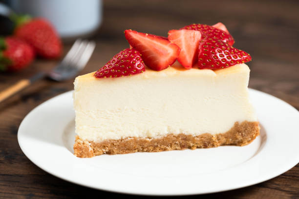

Cheesecake Tarifi

Bu, en sevdiğim tatlı olan cheesecake'in bir fotoğrafıdır.
Malzemeler
200 gram bisküvi
100 gram tereyağı (eritilmiş)
400 gram krem peynir
200 gram toz şeker
3 adet yumurta
1 tatlı kaşığı vanilya özütü
200 ml krema
Yapılışı
Bisküvileri robotta un haline getirin ve eritilmiş tereyağı ile karıştırın.
Karışımı kelepçeli kek kalıbının tabanına eşit şekilde yayın ve buzdolabında 30 dakika dinlendirin.
Krem peyniri ve toz şekeri mikserle çırpın.
Yumurtaları teker teker ekleyerek çırpmaya devam edin.
Vanilya özütü ve kremayı ekleyip karıştırın.
Buzdolabından çıkardığınız bisküvi tabanının üzerine karışımı dökün.
Önceden ısıtılmış 160 derece fırında 60 dakika pişirin.
Fırından çıkardıktan sonra oda sıcaklığında soğutun ve ardından buzdolabında en az 4 saat dinlendirin.
Servis etmeden önce üzerine dilediğiniz meyve sosunu ekleyebilirsiniz.